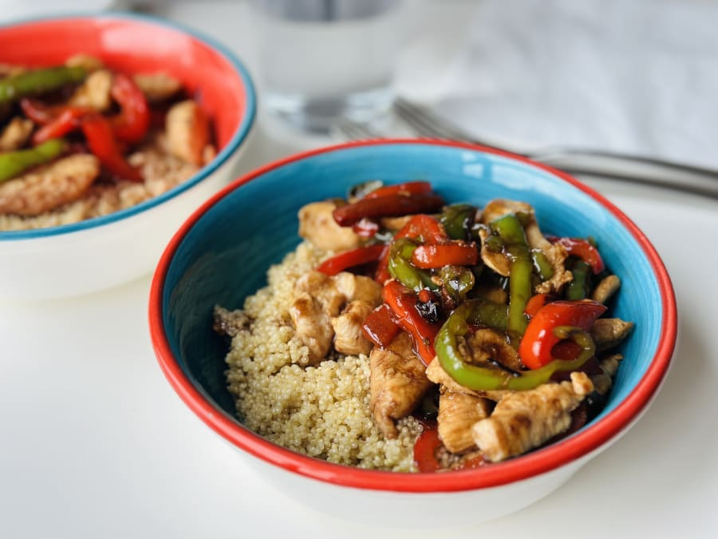

Bowl de Quinoa y Vegetales

Ingredientes (2 porciones)
- 1 taza de quinoa cruda (lavada)
- 2 tazas de agua o caldo
- 1 zanahoria en rodajas
- 1 zucchini en rodajas
- 1 pimiento en tiras
- 1 taza de espinacas frescas
- 2 cucharadas de aceite de oliva
- Sal, pimienta y especias al gusto
Preparación
- Hierve la quinoa con el agua o caldo durante 12-15 minutos hasta que esté tierna. Escurre si queda exceso de líquido.
- En una sartén saltea la zanahoria, zucchini y pimiento con aceite hasta que estén tiernos pero crujientes (5-7 min).
- Mezcla la quinoa con las verduras salteadas y añade las espinacas para que se marchiten ligeramente.
- Sazona con sal, pimienta y tus especias favoritas. Sirve caliente.